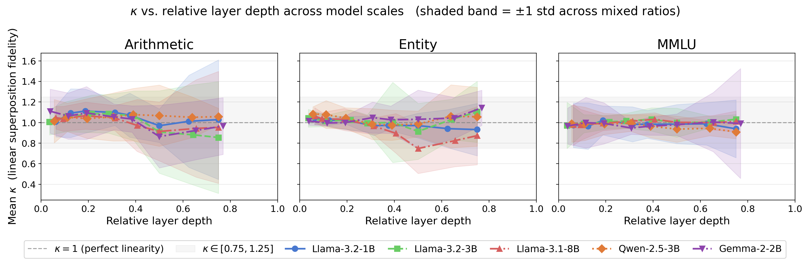

Overview
Give a transformer in-context examples drawn from several different tasks and it behaves as though it is holding all of them at once. I wanted to know whether that is literally true of the representations — whether the residual stream really does carry a linear superposition of the individual task vectors.
Task vectors are the starting point: a set of in-context demonstrations induces a latent vector in the residual stream that summarizes the task, and that vector alone is enough to steer the model's behavior on a held-out question. The natural extension is that a prompt mixing several tasks induces a weighted combination of their individual vectors. That hypothesis had already been supported behaviorally — through gold-token probabilities and low-dimensional visualizations — but behavioral superposition does not imply that hidden representations combine linearly. Something else could produce the same output distribution.
Does the linear-combination hypothesis hold at the activation level in instruction-tuned models — and if it does, what does the linear description leave out?
The answer turns out to be layered. The convex prediction is accurate at every depth I probe, and flat across depth: nothing about the first-order geometry changes as you move through the network. What changes is the part of the representation the prediction ignores. That orthogonal residual grows steadily with depth, becomes statistically resolvable only in the middle layers and only for task groups whose representations are well separated, and — regardless of whether it is resolvable — is load-bearing: removing it perturbs the model's output more than removing any random direction of the same length.
This is sole-authored work, submitted to BlackboxNLP. It covers five instruction-tuned models across three families and 1B–8B parameters: Llama 3.2 1B, Llama 3.2 3B, Llama 3.1 8B, Qwen 2.5 3B, and Gemma 2 2B.
How it works
- Task groups
- Three of them, each isolating one axis of what "a different task" can mean. Arithmetic varies the question format — the same two-integer sum presented as a direct sum, a multiple-choice selection, or a verification of a proposed answer — while holding the semantics fixed. Entity varies the semantic relation: a country mapped to its capital, its currency, or its language. MMLU varies task semantics across World History, Law, and Machine Learning while holding the multiple-choice format constant. Separating these matters, because how separable the tasks are turns out to govern the main result.
- Prompt ratios
- Every prompt holds three in-context examples and one test question, and the tasks the examples are drawn from vary: three pure ratios where all three examples come from one task, six two-task mixes, and one prompt taking a single example from each. Because the mixing weights are set by the prompt rather than inferred, the convex combination each mixed ratio predicts is known in advance.
- Contrast vectors
- Work on task vectors typically injects them into a zero-shot prompt, which implicitly treats the zero-shot activation as a baseline. I make that baseline explicit: for each test question I take the residual-stream state at the assistant-turn boundary token with the in-context examples present, subtract the state for the same question with no examples, and analyze the difference. Collected at layers spaced proportionally to each model's depth, so results are comparable across model sizes.
- Fidelity, κ
- How well the convex prediction describes a mixed ratio: the scalar projection of its observed displacement onto the direction the prediction points. κ = 1 means the prediction accounts for the observed displacement exactly along its own direction; κ = 0 means complete orthogonality. Because it is a projection, κ is deliberately a first-order diagnostic: it can establish that linear superposition captures the dominant structure, but not that it captures all of it.
- Nulls and intervals
- A permutation test shuffles which mixed centroid is matched to which predicted combination, giving an exact null against which the observed κ is compared; 95% bootstrap intervals over prompt samples quantify the uncertainty in the mean. Every reported κ is read against both.
- The residual
- The component κ is blind to, measured as the angle between the observed displacement and the predicted one. A raw angle is not interpretable on its own, so it is calibrated against a split-half sampling-noise floor: the angle between two independent half-sample estimates of the same displacement, which is the best agreement the data can produce with itself. Their ratio gives a resolvability score where 1 is the noise floor and anything above it is structure the sampling variance cannot explain.
- Causal ablation
- Fit each ratio's average orthogonal residual on one set of questions, then subtract it from the forward pass of a disjoint set and measure how far the next-token distribution moves. The control arm removes a random direction, orthogonal to the prediction and rescaled to identical norm, so the two arms differ only in which direction is removed — any gap is attributable to direction alone.
What came out of it

- The convex prediction holds, and it holds flatly. Mixed-task centroids land on the ratio-weighted convex combination of the pure-task centroids, with bootstrap intervals clearing the permutation null at its exact floor for every model, task group, and layer. Linear superposition is a scale-accurate first-order description of mixed-task representations throughout the network — not just at one convenient depth. What does grow with depth is the spread across ratios, so a single scalar projection becomes steadily less descriptive of the full geometry even as its mean stays put.
- The residual grows with depth; its resolvability does not. The orthogonal component increases monotonically or near-monotonically through the network in every task group. But whether it becomes statistically resolvable is governed by task separability rather than by its own size: for Arithmetic and Entity, increasing separation between the pure-task displacements shrinks the sampling-noise floor until the residual clears it, giving an interior peak at intermediate depth. MMLU's shared multiple-choice format keeps its task vectors weakly separated and the floor correspondingly high, so its residual tracks the floor almost everywhere and clears it only marginally, in only two of the five models. Decomposing the ascending run confirms the mechanism differs by group: Arithmetic is residual-driven, Entity is floor-driven, MMLU is floor-limited.
- The residual is load-bearing, and it is the direction that matters. At three-quarter depth, removing a ratio's held-out residual shifts the next-token distribution further than every one of thirty norm-matched random orthogonal draws — in all six mixed ratios, in all three task groups. Pooled, the ablation moves the distribution several times further than the largest random draw does. And the same pipeline returns a null result exactly where one is expected: at the shallowest probed layers, before the boundary token has aggregated the in-context examples, there is no systematic residual to remove and the test correctly fails to separate.
- Magnitude, resolvability, and causal importance come apart. MMLU has the smallest residual of the three groups and is the one group where the split-half test cannot resolve it — yet its residual direction still beats random directions under ablation. The two tests answer different questions, and the dissociation is the point: neither how big a direction is nor whether you can distinguish it from noise tells you whether the model is using it.
The conclusion I take from this is narrower than "superposition is linear" and more useful. The first-order linear picture is right about scale — it predicts where mixed-task representations sit, at every depth. But the structure it discards is not rounding error: it is real, it is systematic, it organizes itself with depth, and the model's output depends on it. Whatever a linear account of task composition is good for, it is not a complete account.
Limitations
- Scale is capped at 8B. Hardware, not choice. Whether the same depth- and separability-resolved picture survives at larger scales is open.
- The ablation runs on one model. The causal intervention is done on Llama 3.2 3B alone, chosen arbitrarily among those tested; the geometry results cover all five, but the causal claim does not.
- MMLU's null is single-layer. Its prompts are roughly thirty times longer than the other groups', and a full depth sweep of the patched forward passes did not fit the compute budget. The headline causal claim is therefore read at the one depth where all three groups have data, which also means MMLU contributes no shallow-layer negative control of its own.
- The sweep stops at three-quarter depth. That is consistent with the emerging account of how depth is used — the final layers sharpen the output distribution rather than build the representations under study — but it is an assumption I inherit rather than one I test.
- Positional encoding is not controlled for. Linearity is demonstrated without explicitly holding it fixed.
What I’d do differently
- Survey the field before setting the agenda. I started from wanting to test whether the superposition was actually linear — and a proper reading of the task-superposition literature would have told me sooner that the behavioral version of that claim was already established, and that the genuinely open question was the representational one: does it hold of the hidden states, and what does the first-order description miss? I got to that question, but partway through, after spending effort confirming something the field already knew. Reading first would have aimed the experiments at the open question from the start.
- Build the pipeline before the results. The code grew alongside the experiments, which meant checking things at the end rather than as they were produced. I would set it up the other way round now — fixed interfaces, saved checkpoints between stages, and tests on the intermediate quantities — so that each number is verified where it is computed instead of trusted once it reaches a plot.
- More compute, more models. Five models between 1B and 8B is what the hardware allowed, and it is the binding constraint on how general the claim can be. A wider range of scales and families would say much more about whether this geometry is a property of transformers or of these particular transformers.
Links
Code & methodology (anonymized for review)
The paper is under review and anonymized, so it is not linked here yet.